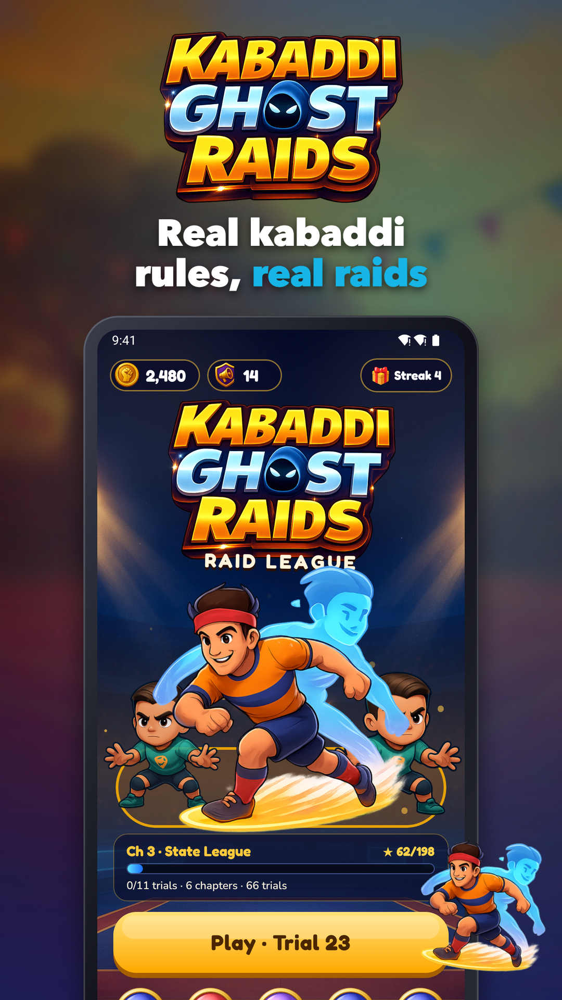
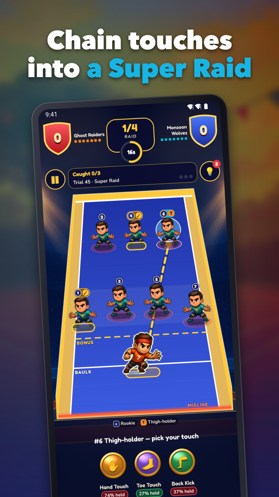
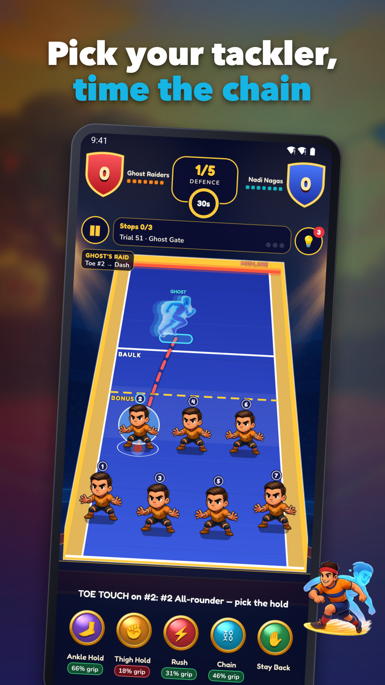
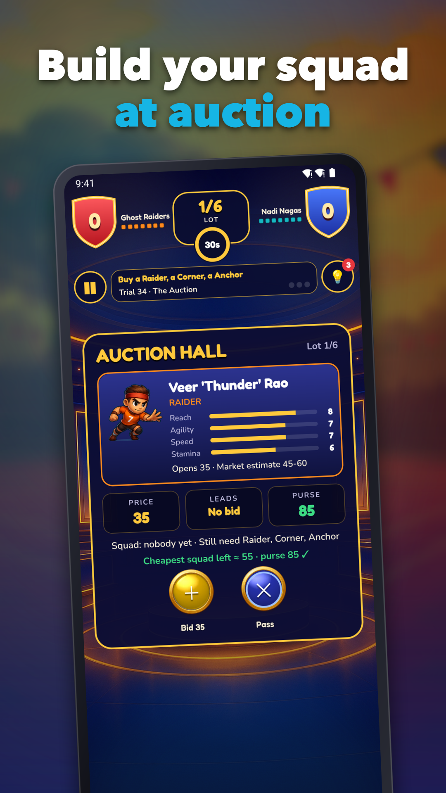
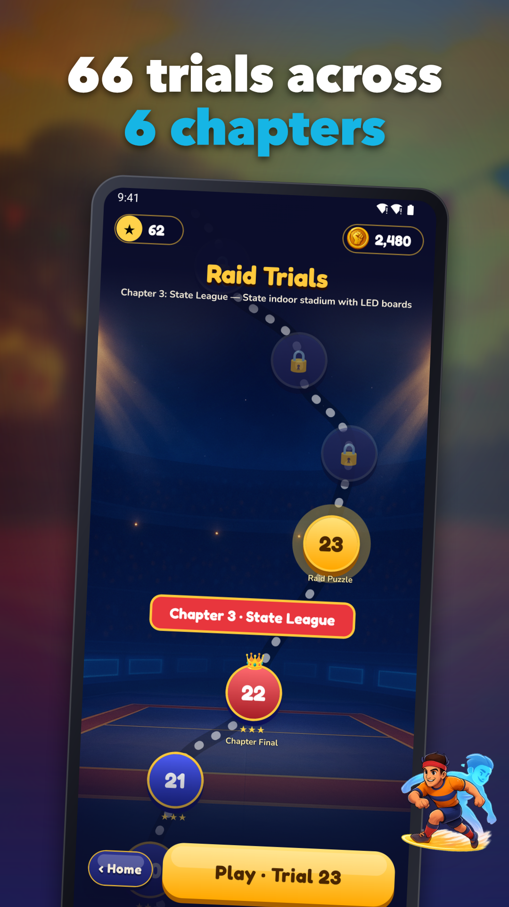
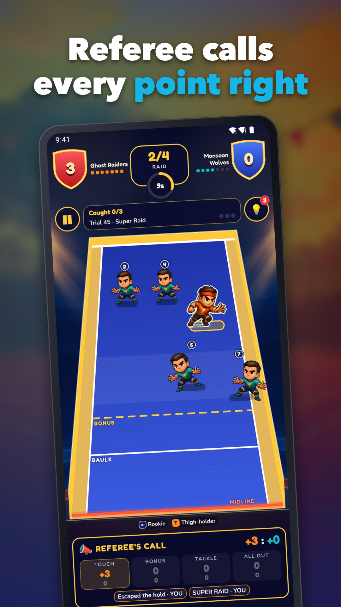

Kabaddi Ghost Raids: Raid Game
Kabaddi game with real rules: raid, tackle and play live with friends.






Step onto the mat in a kabaddi game built around real rules, real risk and real rivalry. Drag your raider across the midline, touch the defenders, and get home before the 30-second raid clock runs out. Then switch sides and stop the other raider with perfectly timed tackles.
RAID AND TACKLE
Every raid is a risk-and-reward call. Drag a path through the formation, pick your move, and see the risk percentage before you commit.
• Raid moves: Hand Touch, Toe Touch, Backward Kick, bonus-line hop, plus Dash and Dubki to get home
• Struggle mini-game when you are held: tap the rhythm, pull away and lunge for the midline
• Defence is never automatic: tap any defender to select or switch, then time Ankle Hold, Thigh Hold, Rush, Block or a two-defender Chain Tackle
• Grip percentage is shown for each defence move, so you can read the match
OFFICIAL-STYLE RULES
The referee panel lists every event after each raid, and the scoreboard shows the very same points.
• Touch points and tackle points
• Bonus point only with 6 or more defenders
• Super Tackle with 3 or fewer defenders, Super Raid with 3 or more touches
• All-out with revival, one player back per point
• Do-or-Die on the third empty raid
• 20-minute halves, or a faster Blitz match with 10-minute halves
66 LEVELS, SIX CHAPTERS
Climb from the Village Mat through District Cup, State League, Auction Season and Continental Cup to the World Championship. Each of the 66 handcrafted levels is a fresh match situation, and every chapter ends in a Full Match boss. Earn up to 3 stars per level, with goals shown before you start.
PLAY WITH FRIENDS
Looking for a kabaddi multiplayer game that suits a group chat? Open a private room and play live and in real time against friends or other players, and climb the leaderboards for bragging rights. Prefer to play alone? Single-player works offline, with no account or login needed.
KEEP COMING BACK
• Daily challenge and login streaks
• Boosts and power-ups for tough raids
• Coins to collect and spend
• Sound and haptics settings you can switch off
FAIR AND LIGHT ON ADS
Rewarded ads only play when you choose them, for a revive, a free-currency boost and more. Interstitials start only after level 10 and appear at most once every four levels. A one-time Remove Ads purchase takes interstitials away. Coin packs are fixed-price, with no loot boxes. Ad consent is requested before any ad is shown.
Ready for your first kabaddi raid? Lace up, read the gap, and take the mat.
Support: jeets98e@gmail.com